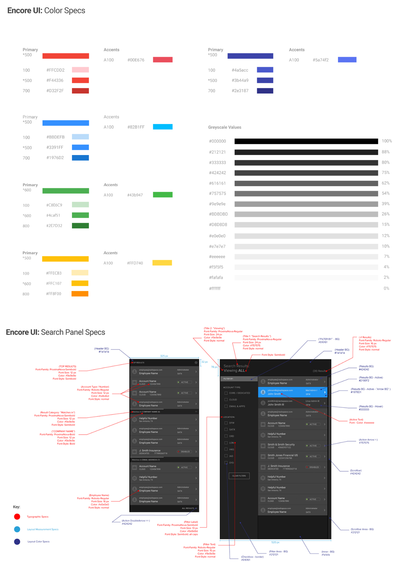

How We Got There
Once we secured buy-in from senior leadership following our kick-off sprint, I
worked closely with product management and the engineering teams to continue
collaboration and transparent communication. The API, UI, and design teams
shared agile sprint cycles with the same product manager. We followed agile
methodology with short, iterative release cycles, two-week sprints, and regular
demos to management and the larger team.
We began prototyping in the browser as soon as possible, first with dummy API
responses until the real thing was available. Tight feedback loops between
development and design made pivots due to technical hurdles or scope adjustment
quick and easy.
As the sole member of the team with a strong understanding of both the
development and design disciplines, I translated requests and responses between
teams. I often interpreted design intent to developers struggling to implement
interactive features designers hadn’t anticipated, or translated technical
limitations to designers so they could adjust their mock-ups.
I often interpreted design intent to developers struggling to implement
interactive features designers hadn’t anticipated, or translated technical
limitations to designers so they could adjust their mock-ups.
My involvement aligned development, product, design, and customer on an
aggressive timeline.
Few examples of search across such a large, specific data set existed. Though
commercial sites and search engines offered some ideas, most search interactions
accommodate users who are browsing and refining rather than trying to locate a
single, specific result among a mountain of data. Designing Encore Search
brought the differences in commerical and retail design vs. enterprise design of
internal tools into stark relief.
Most search interactions accommodated users who were browsing and refining
rather than trying to locate a single, specific result among a mountain of data.
I knew we needed a powerful yet intuitive search tool. I turned to other
data-rich search experiences: email clients, chat applications, advanced search
for libraries and search engines, and filtering and refinement sidebars for
large retail sites. These search applications served as inspiration for the
Encore Search interaction and flow, coupled with progressive disclosure and
Rackspace-specific creative adjustments.

During the kick-off sprint, I led discussion to nail down the details of what
information the Phone Team needed to access in order to transfer customers to
the right people. After speaking with members of the Phone Team to verify our
assumptions and understand their needs, I led designers and developers to work
together—what information could the API provide, where should the information be
displayed, and were certain ideas designers had for interaction possible to
build on our aggressive timeline?
By collaborating closely with the API and UI teams, we were able to vet sketches
early and understand the limitations of what was achievable on the project’s
aggressive timeline. White board sketches laid the foundation for what the team
presented to senior leadership at the end of the week.
By collaborating closely with the API and UI teams, we were able to vet sketches
early and understand the limitations of what was achievable on the project’s
aggressive timeline.
Using low-fidelity wireframes and animations in Keynote, we showcased our vision
for the experience and interaction of Encore Search to senior leadership at the
end of that first sprint week. Though there were certainly changes and
refinements, it was easy to see, even at that early stage, the skeleton of the
final experience we delivered to the Phone Team four months later.
After the kick-off sprint and buy-in from leadership, the team got to work. With
knowledge of what the UI team needed returned from the API, the API team worked
to leverage legacy systems and existing API teams to return the data needed more
quickly than existing tools. With the vision provided by rough wireframes
produced during the sprint, the UI team began developing the paneled interface
and animations required that had no precedent in the existing ecosystem of
internal tools. The design team got to work refining the wireframes with user
feedback and began to apply color and font choices to create high-fidelity
mock-ups and specs for the UI team.
Though teams worked concurrently and independently, we shared scrum meetings and
held regular demos of progress to keep communication clear. During this phase of
the project, I vetted visual designs and offered critiques. I helped visual
designers understand what specifications needed to be communicated to
developers, and which ideas for interaction might increase level of effort or
affect project scope.

The panel interaction, while a creative solution for progressive disclosure and
way-finding through search results, presented challenges from a user experience
perspective. We had found a solution that helped the Phone Team zero in on the
correct search result, but panels had certain ramifications as an interface
choice. For instance, if a user found a result and opened several subsequent
panels to see more detail, what should happen when they close the initial result
panel? Would they expect the subsequent panels to remain open?
The design team spent time testing this interaction thoroughly with users to
gauge their expectations. I facilitated conversations with the UI team to
understand what options were fastest to implement that would still match user
expectations. Through negotiation, early prototypes in the browser, and
productive compromise, we arrived at a solution.